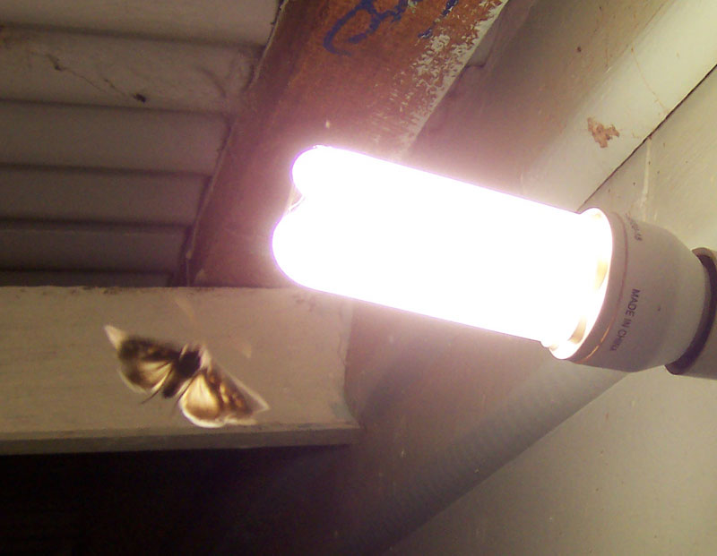

昆蟲為什麼會繞著燈飛？
把鏡頭從燈泡前拉遠，繞圈、失去平衡與沒有靠近燈的飛行，呈現出夜間照明的不同影響。
晚上開燈後，看見飛蛾在燈旁打轉，很容易以為牠只是一直想靠近光。但如果仔細看牠的身體朝向，就會發現，繞圈可能與牠如何維持飛行姿態有關。要理解燈光的影響，還得看看那些沒有停在燈旁的昆蟲。
一、先看身體朝向，再看飛到哪裡
飛行中的昆蟲，必須持續調整身體相對於地面的姿態。對許多昆蟲而言，讓背部朝向視野裡較亮的區域，是維持姿態的一種方式，稱為背光反應（dorsal light response）。在自然夜空下，上方天空通常比下方地面明亮，這個反應有助於讓背部朝上。附近若多了一個比夜空更顯著的光源，牠傾斜身體的方向便可能改變。原本有助於穩定飛行的反應，在這種照明條件下，反而會使飛行失去平衡。
2024年，Samuel Fabian等人發表在《自然通訊》的研究，用野外高速攝影與實驗室動作捕捉，重建昆蟲在燈旁的三維飛行。哥斯大黎加的兩部同步相機，能把單一畫面裡難分前後的動作，還原成立體路徑。實驗室裡，研究者又在昆蟲胸部裝上輕量標記，追蹤身體的位置與旋轉。這使他們得以同時比較昆蟲往哪裡飛，以及飛行時背部朝向哪裡。比起只數燈旁有幾隻昆蟲，這種方法更能檢驗牠們究竟如何轉向。

二、繞圈、向上失速，與翻轉下墜
靠近點狀光源時，研究記錄到的昆蟲，多半朝著與光源方向近乎垂直的方向飛，而非直線衝向燈泡。牠們把背部傾向光源，身體隨之側傾，原本向上的飛行作用力也改變方向，便可能持續轉彎。從上方看，路徑於是呈現繞燈的弧線。這能解釋一個看似矛盾的現象：昆蟲一直留在燈旁，卻未必一直縮短自己與燈之間的距離。維持在光源附近，可以是連續轉向造成的結果。
同一種背部朝光的反應，還可能產生其他飛行動作。昆蟲背向光源飛離時，若向後仰來維持背部朝光，就可能愈爬愈陡、逐漸減速，直到無法繼續前進。當昆蟲從光源上方飛過，若把背部轉向下方的燈，便可能翻轉並陡降。研究者在野外錄影中，將這些動作分成繞行、失速與翻轉三類。電腦模型只加入相應的姿態調整，也能重現這三類路徑，支持背光反應足以造成近燈困陷的解釋。
三、把光移到哪裡，結果就會改變
如果關鍵在於昆蟲把哪裡判斷成上方，改變光的分布就應該改變飛行。研究者用燈照亮地上的白布時，看見昆蟲翻轉、墜落；把白布架在上方，讓燈光反射成類似天空的漫射光，昆蟲則能在下方較正常地飛行。這個比較把「有沒有光」拆成更精確的問題：光從哪個方向來，又如何分布在視野裡？同樣是人工提供的光，集中在一處與鋪展在上方，對飛行姿態可能有不同作用。這也使燈具朝向、遮蔽與周圍反射面成為值得注意的條件。
這套解釋最有力的範圍，是研究者實際拍到的近距離飛行。論文也記下例外：實驗室受測的夾竹桃天蛾與果蠅，沒有出現其他受測昆蟲那樣的困陷動作。不同種類、波長與活動狀態如何影響反應，仍有需要釐清的地方。研究中切換光源及觀察翻轉的結果，也比「把燈當成月亮，維持固定角度飛行」更符合背光反應模型。至於昆蟲從較遠處如何移動、何時接近一盞燈，則需要另一種追蹤尺度來回答。
四、沒有飛到燈旁，也可能受影響
同年另一項刊於《美國國家科學院院刊》的研究，把雷達反射器裝在蛾身上，追蹤牠們飛過較大的空間。研究地點在德國一片草地，六盞高壓鈉燈圍成圓圈，每盞距離中央釋放點85公尺。研究者共追蹤95隻雄蛾，分別比較開燈與關燈時的路徑。在開燈條件下釋放的50隻中，只有兩隻最後停在路燈旁。這個結果顯示，只觀察燈下聚集的蛾，會漏掉許多經過附近卻繼續飛行的個體。
雷達資料呈現的影響，也超出直接繞燈。在特定月亮條件下，受測天蛾與枯葉蛾的飛行路徑變得更曲折；月亮在地平線下時，枯葉蛾離開燈圈的比例也下降。兩組蛾對月亮條件的反應不同，研究者仍在釐清自然光與人工光如何共同影響移動。這項實驗使用的是先以燈誘捕的雄蛾及高壓鈉燈，雷達本身也不能測出飛行高度。它補上的是燈外的移動證據，與近距離高速攝影各自處理不同尺度的問題。
五、燈旁的成蟲，只是生命週期的一部分
若要知道照明是否影響當地蛾的數量，還可以回到牠們生長的植物上。2021年，Douglas Boyes等人在英格蘭南部，成對比較長期受路燈照射與鄰近未受照明的樹籬、草邊。研究選擇移動範圍較小的毛蟲，避免把剛好飛過的成蛾，當成在當地生活的全部個體。分析估計，照明樹籬的毛蟲數量比對照地點低約47%，草邊低約33%。這些是特定棲地的成對比較結果，研究者也指出，既有路燈並非隨機設置，仍須考慮未量到的環境差異。
毛蟲調查讓問題從「有幾隻成蟲繞燈」往前延伸到生長與覓食。同一團隊另在原本未受照明的草邊設燈，短時間實驗也發現，白光LED會干擾夜間毛蟲爬上草莖取食的活動。至於長期照明地點為何毛蟲較少，產卵、天敵與寄主植物等途徑，還需要進一步分辨。這些結果與飛行研究相接之處，在於提醒我們選對觀察對象。燈旁飛舞的畫面容易引起注意，卻只是夜間照明可能影響的其中一個環節。
六、先決定哪裡、何時需要亮
從這些不同尺度的研究出發，調整照明可以先從使用需求做起。戶外燈若是為了看清入口與台階，就把光集中在這些位置，減少照到樹叢、天空及其他不需照亮的地方。再以足夠使用的亮度、定時或感應控制，減少整晚持續開燈的時間。DarkSky與照明工程學會共同提出的戶外照明原則，便包括必要、定向、低亮度、時間控制，以及盡可能減少短波長光。色溫只是其中一項，燈的方向、強度與開啟時間同樣需要安排。
近距離飛行研究，讓我們更能理解一隻昆蟲為什麼留在燈旁；雷達與毛蟲調查，則把視野推到燈圈以外，以及看不見成蟲飛舞的時候。要評估一盞燈的生態影響，可以同時關心照亮了什麼地方、持續多久，又有哪些生物在那裡活動。入口需要讓人安全通行，花圃與樹籬也可能是夜間動物的生活空間。把這些需求放在同一張配置圖上，比只看燈旁昆蟲多寡，更有助於討論照明如何調整。保留一些黑暗，也可以是仔細安排使用空間的結果。
查證資料來源6 項
近燈姿態、較遠距離移動與毛蟲棲地調查分開閱讀；照明建議採實務原則，不把某種燈色視為對所有昆蟲無害。
- Why flying insects gather at artificial light，Fabian等，Nature Communications，2024 ↗
支持內容：三維追蹤、背光反應、三類路徑、漫射上方光、物種例外與近距離範圍。
- Shedding light with harmonic radar，Degen等，PNAS，2024 ↗
支持內容：95雄蛾、開燈50隻中的2隻、85公尺六燈、曲折度及月亮交互作用；雷達不測高度，先誘捕樣本和鈉燈限制。
- Street lighting has detrimental impacts on local insect populations，Boyes等，Science Advances，2021 ↗
支持內容：樹籬47%與草邊33%是局地成對比較，不是全球減少比例；非隨機路燈配置。另有短期草邊覓食實驗，不把取樣數直接當死亡率。
- Why insects are drawn to artificial light at night，Science News，2024 ↗
支持內容：獨立科學報導及未參與研究者的問題：背光機制仍待驗證細部、種類與不同地理條件；對照原研究解釋，不沿用更強的新聞標題結論。
- Light Pollution Disturbs Moths Even in the Dark，University of Würzburg，2024 ↗
支持內容：研究機構說明雷達研究、月亮交互作用仍未清楚及較大移動尺度。網頁內日期為2024-10-09，搜尋標示的2023日期不採；百分比回原論文分母。
- Five Principles for Responsible Outdoor Lighting，DarkSky與IES ↗
支持內容：必要、定向、最低足夠亮度、控制使用時間與較暖色光。實務原則不當成上述實驗已證明的單一最佳設計，也不聲稱暖光無害。
延伸探討
把故事帶回自己的思考
你喜歡什麼樣的夜晚，是明亮熱鬧的街道、留一盞燈的房間，還是看得到星星的地方？如果能重新安排住家附近一小段路的照明，你最想保留哪些明亮與黑暗？當不同人的安全感、生活習慣和其他生物的活動空間不完全一致時，你會怎麼討論取捨？